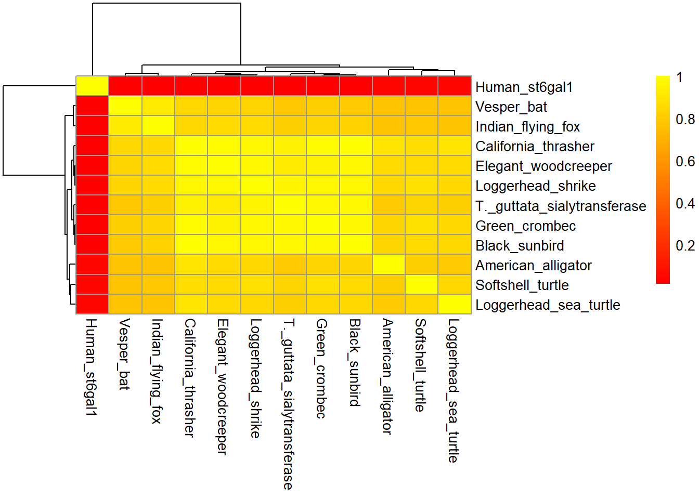

library(bio3d)
Fasta <- read.fasta("MEGA_FASTA.fas")Find_Gene_Project
Using Bio3D
[Q7] Generate a sequence identity based heatmap of your aligned sequences using R.If necessary convert your sequence alignment to the ubiquitous FASTA format (Seaview can read in clustal format and “Save as” FASTA format for example). Read this FASTA format alignment into R with the help of functions in the Bio3D package.
First as always, call your programs
Calculate a sequence identity matrix (again using a function within the Bio3D package).
identity_matrix <- seqidentity(Fasta)
identity_matrix T._guttata_sialytransferase Human_st6gal1
T._guttata_sialytransferase 1.000 0.014
Human_st6gal1 0.014 1.000
Green_crombec 0.965 0.014
California_thrasher 0.950 0.017
Black_sunbird 0.965 0.014
Elegant_woodcreeper 0.930 0.014
Loggerhead_shrike 0.953 0.014
Softshell_turtle 0.837 0.043
American_alligator 0.802 0.043
Loggerhead_sea_turtle 0.814 0.043
Vesper_bat 0.791 0.014
Indian_flying_fox 0.814 0.014
Green_crombec California_thrasher Black_sunbird
T._guttata_sialytransferase 0.965 0.950 0.965
Human_st6gal1 0.014 0.017 0.014
Green_crombec 1.000 0.983 0.977
California_thrasher 0.983 1.000 1.000
Black_sunbird 0.977 1.000 1.000
Elegant_woodcreeper 0.942 0.983 0.965
Loggerhead_shrike 0.965 0.967 0.965
Softshell_turtle 0.872 0.867 0.860
American_alligator 0.837 0.900 0.837
Loggerhead_sea_turtle 0.849 0.900 0.849
Vesper_bat 0.814 0.850 0.802
Indian_flying_fox 0.837 0.850 0.826
Elegant_woodcreeper Loggerhead_shrike
T._guttata_sialytransferase 0.930 0.953
Human_st6gal1 0.014 0.014
Green_crombec 0.942 0.965
California_thrasher 0.983 0.967
Black_sunbird 0.965 0.965
Elegant_woodcreeper 1.000 0.977
Loggerhead_shrike 0.977 1.000
Softshell_turtle 0.860 0.872
American_alligator 0.860 0.849
Loggerhead_sea_turtle 0.860 0.849
Vesper_bat 0.837 0.837
Indian_flying_fox 0.860 0.860
Softshell_turtle American_alligator
T._guttata_sialytransferase 0.837 0.802
Human_st6gal1 0.043 0.043
Green_crombec 0.872 0.837
California_thrasher 0.867 0.900
Black_sunbird 0.860 0.837
Elegant_woodcreeper 0.860 0.860
Loggerhead_shrike 0.872 0.849
Softshell_turtle 1.000 0.814
American_alligator 0.814 1.000
Loggerhead_sea_turtle 0.849 0.802
Vesper_bat 0.767 0.767
Indian_flying_fox 0.791 0.767
Loggerhead_sea_turtle Vesper_bat Indian_flying_fox
T._guttata_sialytransferase 0.814 0.791 0.814
Human_st6gal1 0.043 0.014 0.014
Green_crombec 0.849 0.814 0.837
California_thrasher 0.900 0.850 0.850
Black_sunbird 0.849 0.802 0.826
Elegant_woodcreeper 0.860 0.837 0.860
Loggerhead_shrike 0.849 0.837 0.860
Softshell_turtle 0.849 0.767 0.791
American_alligator 0.802 0.767 0.767
Loggerhead_sea_turtle 1.000 0.767 0.767
Vesper_bat 0.767 1.000 0.930
Indian_flying_fox 0.767 0.930 1.000Then generate a heatmap plot and add to your report. Do make sure your labels are visible and not cut at the figure margins.
library("pheatmap")
#vector of labels
seq_labs <- c( "T._guttata_sialytransferase","Human_St6Gal1", "Green_crombec", "California_thrasher", "Black_sunbird", "Elegant_woodcreeper", "Loggerhead_shrike", "Softshell_turtle", "American_alligator", "Loggerhead_sea_turtle", "Vesper_bat", "Indian_flying_fox")Make heatmap using identity matrix
pheatmap(identity_matrix,
cluster_rows = TRUE,
cluster_cols = TRUE,
annotation_legend_title = "Sequence Identity Heatmap",
color=colorRampPalette(c("red", "yellow"))(100))
Generating a consensus sequence and row-wise maximum from your sequence identity matrix
#determining file type
class(Fasta)[1] "fasta"file.info("MEGA_FASTA.fas") size isdir mode mtime ctime
MEGA_FASTA.fas 2281 FALSE 666 2023-12-07 12:23:31 2023-12-07 12:10:50
atime exe
MEGA_FASTA.fas 2023-12-07 20:01:17 no# generating consensus sequence using Bio3D
con_seq <- consensus(Fasta)
print(con_seq$seq) [1] "P" "S" "S" "G" "M" "L" "G" "I" "-" "-" "M" "M" "T" "L" "C" "D" "-" "V" "D"
[20] "V" "Y" "E" "F" "L" "P" "S" "K" "R" "Q" "T" "D" "I" "C" "H" "Y" "Y" "Q" "K"
[39] "F" "H" "D" "-" "A" "C" "T" "M" "G" "A" "Y" "H" "P" "L" "L" "F" "E" "K" "N"
[58] "L" "V" "K" "-" "-" "N" "Q" "G" "T" "D" "E" "-" "I" "Y" "-" "-" "G" "K" "V"
[77] "T" "L" "P" "G" "F" "R" "-" "-" "H" "C"What if we change the cutoff, does that change the sequence?
con <- consensus(Fasta, cutoff = 0.6)
print(con$seq) [1] "P" "S" "S" "G" "M" "L" "G" "I" "-" "-" "M" "M" "T" "L" "C" "D" "-" "V" "D"
[20] "V" "Y" "E" "F" "L" "P" "S" "K" "R" "Q" "T" "D" "I" "C" "H" "Y" "Y" "Q" "K"
[39] "F" "H" "D" "-" "A" "C" "T" "M" "G" "A" "Y" "H" "P" "L" "L" "F" "E" "K" "N"
[58] "L" "V" "K" "-" "-" "N" "Q" "G" "T" "D" "E" "-" "I" "Y" "-" "-" "G" "K" "V"
[77] "T" "L" "P" "G" "F" "R" "-" "-" "H" "C"This appears to be the default cutoff
Blast pdb
consensus_blast <- blast.pdb(con$seq)
hits <- plot(consensus_blast)
# Then save it so we don't have to blast again and you can skip to the next code chunk
save(hits, consensus_blast, file = "consensus_blast_results.Rds")Using the blast.pdb() function with the consensus sequence threw an error the first time so I did a bunch of extra unnecessary steps below TT.TT. Skip from here to “PDB Results” section
Now we can load the results and skip re-running blast through the code chunk above
load("consensus_blast_results.Rds")
hits$hits
pdb.id acc group
1 "6QVS_A" "6QVS_A" "1"
2 "4JS1_A" "4JS1_A" "1"
3 "4MPS_A" "4MPS_A" "1"
$pdb.id
[1] "6QVS_A" "4JS1_A" "4MPS_A"
$acc
[1] "6QVS_A" "4JS1_A" "4MPS_A"
$inds
[1] TRUE TRUE TRUE FALSE FALSE FALSE FALSE FALSE
attr(,"class")
[1] "blast"Skip if consensus search works
So it would be better just to search the sequence of interest and the highest conserved sequence based on the sequence identity matrix.
To do this, we first need to subset just our sequence of interest from the FASTA file.
identity matrix max
row_max_values <- apply(identity_matrix, 1, max)
row_max_valuesAlso having all the max be 1 is odd, this is because I’ve set the same identity to itself for the heatmap, we’re interested in the other identities for this, lets look at all of the unique identities
Finding identity matrix unique
unique_values_per_row <- apply(identity_matrix, 1, unique)
unique_values_per_rowTrying to get an easier visualization so I don’t have to look at all the numbers
greater_than_threshold <- identity_matrix >= 0.983
greater_than_threshold
values_above_threshold <- identity_matrix[greater_than_threshold]
print(values_above_threshold)Green crombec, california thrasher, elegant woodcreeper, and black sunbird all have the highest sequence identity of 0.983. So any of these sequences should work
Subsetting a FASTA file (double skip this)
This is only if you forget quotation marks for your FASTA sequence so you think something is wrong >.<
To subset a fasta file, you first need to define the file path. You can figure out and set the file path using getwd() and assigning it to a variable.
getwd()
file_path <- "/Users/kryst/Documents/UCSD 2022/Classes/2023 Q4 Fall/BGGN 213/Lab Assignments/Find_Gene_Project/MEGA_FASTA.fas" Subsetting sequence from fasta file using Biostrings package. Biostrings is part of bioconductor so first you need to install it using BiocManager::install("Biostrings"). Looking at our original FASTA file, the sequence of interest is stored as the third sequence so in the fasta_sequences function, we will call the third vector
library(Biostrings)
fasta_sequences <-readAAStringSet(file_path)
guttata <- fasta_sequences[[3]]
guttataGetting Protein Database (PDB) info using Bio3D (skip again if consensus works)
The blast.pdb() function will only use a single sequence character, but our subsetting above didn’t work because there is other data. Instead you can just post the FASTA sequence using quotation marks
guttata <- blast.pdb("PSSGMLGIVLMXXLCDQVDVYEFLPSKRQTDICHYYQKFHDHACTMGAYHPLLFEKNLVKHMNQGTDEDIYTHGKVTLPGFRKVHC")
# save output so we don't need to run blast every time
g_hits <- plot(guttata)
save(g_hits, guttata, file = "guttata_blast_results.Rds")Doing the same using black sunbird as the consensus due to it having the highest sequence max identity (in this case 0.983). Could have picked one of the 3 others with this value as well
bird <- blast.pdb("PSSGMLGIVLMMTLCDEVDVYEFLPSKRQTDICHYYQKFHDHACTMGAYHPLLFEKNLVKHMNQGTDEDIYTHGKVTLPGFRKVHC")
b_hits <- plot(bird)
save(b_hits, bird, file = "bird_blast_results.Rds")Interestingly, when you compare the T.guttata sequence to inputting the FASTA sequence in blastp (https://blast.ncbi.nlm.nih.gov/) and using the pdb database, you get 7 hits instead of 3.
Loading pdb files we made
load("guttata_blast_results.Rds")
g_hits
load("bird_blast_results.Rds")
b_hitsPDB Results
The results from CONSENSUS online search include:
Getting results from CONSENSUS Bio3D search include:6QVS, 4JS1, and 4MPS which is the same as just searching the guttata sequence (see further code chunks)
# pull files
files <- get.pdb(hits$pdb.id, path="pdbs", split=TRUE, gzip=TRUE)Warning in get.pdb(hits$pdb.id, path = "pdbs", split = TRUE, gzip = TRUE):
pdbs/6QVS.pdb exists. Skipping downloadWarning in get.pdb(hits$pdb.id, path = "pdbs", split = TRUE, gzip = TRUE):
pdbs/4JS1.pdb exists. Skipping downloadWarning in get.pdb(hits$pdb.id, path = "pdbs", split = TRUE, gzip = TRUE):
pdbs/4MPS.pdb exists. Skipping download
|
| | 0%
|
|======================= | 33%
|
|=============================================== | 67%
|
|======================================================================| 100%# align files
pdbs <- pdbaln(files, fit = TRUE, exefile="msa")Reading PDB files:
pdbs/split_chain/6QVS_A.pdb
pdbs/split_chain/4JS1_A.pdb
pdbs/split_chain/4MPS_A.pdb
PDB has ALT records, taking A only, rm.alt=TRUE
...
Extracting sequences
pdb/seq: 1 name: pdbs/split_chain/6QVS_A.pdb
PDB has ALT records, taking A only, rm.alt=TRUE
pdb/seq: 2 name: pdbs/split_chain/4JS1_A.pdb
pdb/seq: 3 name: pdbs/split_chain/4MPS_A.pdb # create id's for figure
ids <- basename.pdb(pdbs$id)You can use this to plot a giant figure
plot(pdbs, labels=ids)The results from our guttata online search include: 4JS1, 6QVS, and 4MPS
js1 <- read.pdb("4JS1") Note: Accessing on-line PDB fileqvs <- read.pdb("6QVS") Note: Accessing on-line PDB file
PDB has ALT records, taking A only, rm.alt=TRUEmps <- read.pdb("4MPS") Note: Accessing on-line PDB fileThe results from the Bio3D search for T. guttata are: 4JS1, 6QVS, 4MPS, 6APL, 6APJ, 2WML, and 2WNB
# same 3 as above, but also
apl <-read.pdb("5APL") Note: Accessing on-line PDB file
PDB has ALT records, taking A only, rm.alt=TRUEapj <-read.pdb("6APJ") Note: Accessing on-line PDB filewml <-read.pdb("2WML") Note: Accessing on-line PDB file
PDB has ALT records, taking A only, rm.alt=TRUEwnb <-read.pdb("2WNB") Note: Accessing on-line PDB file
PDB has ALT records, taking A only, rm.alt=TRUEThe results from our online search using “bird” include: 4JS1, 6QVS, 4MPS, 2WML, and 2WNB which are included in the Bio3d search for T. guttata sequence
The results from the Bio3D search for “bird” are:
Let’s take a look at some of the information stored in here
js1
Call: read.pdb(file = "4JS1")
Total Models#: 1
Total Atoms#: 2768, XYZs#: 8304 Chains#: 2 (values: A B)
Protein Atoms#: 2594 (residues/Calpha atoms#: 318)
Nucleic acid Atoms#: 0 (residues/phosphate atoms#: 0)
Non-protein/nucleic Atoms#: 174 (residues: 52)
Non-protein/nucleic resid values: [ BMA (1), CTN (1), GAL (2), HOH (41), MAN (2), NAG (4), PO4 (1) ]
Protein sequence:
PEASFQVWNKDSSSKNLIPRLQKIWKNYLSMNKYKVSYKGPGPGIKFSAEALRCHLRDHV
NVSMVEVTDFPFNTSEWEGYLPKESIRTKAGPWGRCAVVSSAGSLKSSQLGREIDDHDAV
LRFNGAPTANFQQDVGTKTTIRLMNSQLVTTEKRFLKDSLYNEGILIVWDPSVYHSDIPK
WYQNPDYNFFNNYKTYRKLHPNQPFYILKPQMPWELWDILQEISP...<cut>...TIHC
+ attr: atom, xyz, seqres, helix, sheet,
calpha, remark, callCool, lets grab some more data so we can do some conversions
First download related pdb files, not sure how this is different from running the blast search above, I think it’s just calling part of it? specifically it’s calling the pdb id’s from the hits files which we can do instead of calling each of the ID’s individually like I do above
# pull files
g_files <- get.pdb(g_hits$pdb.id, path="pdbs", split=TRUE, gzip=TRUE)
b_files <- get.pdb(b_hits$pdb.id, path="pdbs", split=TRUE, gzip=TRUE)
# align files
pdbs <- pdbaln(files, fit = TRUE, exefile="msa")
# create id's for figure
ids <- basename.pdb(pdbs$id)Calculating RMSD
pdb.annotate() provides a convenient way of annotating the PDB files we have collected. Below we use the function to annotate each structure to its source species. This will come in handy when annotating plots later on
# Calculate RMSD
rd <- rmsd(pdbs)